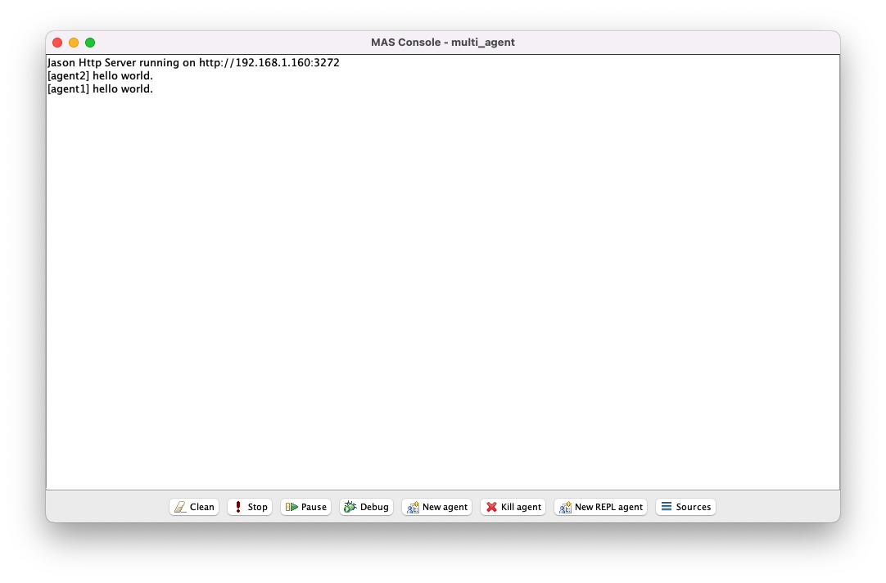

Tutorial 4 - Multi-agent systems
This tutorial provides a brief introduction to implementing multi-agent systems in Jason using the Jason configuration file and Jason communication actions.
Getting started
Create a new Jason project in Eclipse called multi_agent.
The files multi_agent.mas2j and src/asl/sample_agent.asl will be automatically generated as usual.
Step 1 - Agents of the same type
It is possible to instantiate multiple agents from the same agent file in Jason. Agents instantiated in this way are essentially homogeneous agents, in that they share the same initial beliefs, goals, and plans.
Edit the Jason configuration file as follows:
MAS multi_agent {
infrastructure: Centralised
agents:
agent1 sample_agent;
agent2 sample_agent;
aslSourcePath:
"src/asl";
}
With the multi_agent project in focus, select Run Jason Application in the Eclipse toolbar.

Notice that agent1 and agent2 are treated as different agents even though they were instantiated from the same agent file. All agents in a Jason project share the same Jason console.
Although agent1 appears before agent2 in the Jason configuration file, Jason does not guarantee that agent1 will always execute actions before agent2 in each step. This is why agent2 may appear before agent1 in the Jason console for a given execution of the Jason project.
Step 2 - Numbered agents of the same type
Homogeneous agents can also be instantiated from the same agent file by inserting # (hash) followed by a positive integer at the end of the agent definition. An index (starting from 1) is automatically appended to the agent name so that agents can be uniquely identified.
Edit the Jason configuration file as follows:
MAS multi_agent {
infrastructure: Centralised
agents:
agent sample_agent #5;
aslSourcePath:
"src/asl";
}
Run the Jason project.
[agent5] hello world.
[agent4] hello world.
[agent2] hello world.
[agent1] hello world.
[agent3] hello world.
In this example agent sample_agent #5 tells Jason to instantiate five agents from sample_agent.asl and to call them agent1, agent2, ..., agent5.
Step 3 - Agents of different types
Instantiating agents from different agent files is the most common way in Jason to implement heterogeneous agents (i.e. agents equipped with different initial beliefs, goals, and/or plans).
Create a new agent file called friend_of_alice.asl:
/* Initial beliefs and rules */
friend(alice).
/* Initial goals */
!start.
/* Plans */
+!start : friend(X) <- .print("hello ", X).
Create another new agent file called friend_of_bob.asl:
/* Initial beliefs and rules */
friend(bob).
/* Initial goals */
!start.
/* Plans */
+!start : friend(X) <- .print("hello ", X).
Edit the Jason configuration file as follows:
MAS multi_agent {
infrastructure: Centralised
agents:
alice friend_of_bob;
bob friend_of_alice;
aslSourcePath:
"src/asl";
}
Run the Jason project.
[alice] hello bob
[bob] hello alice
Notice that alice and bob share the same initial goals and plans but have different initial beliefs, which leads to different behaviour when the Jason project is executed. Later we will see examples where the initial goals and plans are also different.
Step 4 - Initial base beliefs as parameters
Although you may wish to create homogeneous agents, it is rare that you will want these agents to be completely identical (i.e. to share not only the same plans, but also the same initial beliefs and goals).
One way to customise agents without resorting to different agent files is to supply different initial base beliefs to the agent definition (in the Jason configuration file). Agent configuration options are specified inside square brackets at the end of an agent definition with the keyword beliefs used to specify a comma-separated list (inside quotes) of initial base beliefs.
Create a new agent file called friend.asl:
/* Initial beliefs and rules */
/* Initial goals */
!start.
/* Plans */
+!start : friend(X) <- .print("hello ", X).
Edit the Jason configuration file as follows:
MAS multi_agent {
infrastructure: Centralised
agents:
alice friend [beliefs="friend(bob)"];
bob friend [beliefs="friend(alice)"];
aslSourcePath:
"src/asl";
}
Run the Jason project.
[alice] hello bob
[bob] hello alice
Notice that alice and bob have different behaviour because they were initialised with different initial base beliefs, even though they were instantiated from the same agent file.
Step 5 - Initial achievement goals as parameters
Similar to its support for custom initial base beliefs, the Jason configuration file also allows initial achievement goals to be specified as agent configuration options. In this case the keyword goals is used to specify a comma-separated list of initial achievement goals without the preceding ! (exclamation mark).
Edit friend.asl as follows:
/* Initial beliefs and rules */
/* Initial goals */
/* Plans */
+!start : friend(X) <- .print("hello ", X).
Edit the Jason configuration file as follows:
MAS multi_agent {
infrastructure: Centralised
agents:
alice friend [beliefs="friend(bob)", goals="start"];
bob friend [beliefs="friend(alice)", goals="start"];
aslSourcePath:
"src/asl";
}
Run the Jason project.
[alice] hello bob
[bob] hello alice
The behaviour is unchanged because they were both given the same initial achievement goal !start.
Step 6 - Jason annotations
All belief atoms and goals in Jason can be attached with optional meta-information, called annotations, represented as lists of logic programming atoms and handled by Jason in a familiar way. Annotations are hidden by default but they can be explicitly referenced in agent files using square bracket notation.
Create a new agent file called meta.asl:
/* Initial beliefs and rules */
feeling(today, good)[degree_of_belief(0.75)].
/* Initial goals */
/* Plans */
+feeling(today, good)[degree_of_belief(X)] : X >= 0.5 <- .print("today is a good day").
+feeling(today, good)[degree_of_belief(X)] : X < 0.5 <- .print("today is not a good day").
The line feeling(today, good)[degree_of_belief(0.75)] means that feeling(today, good) is an initial base belief annotated with meta-information degree_of_belief(0.75).
Note: This symbol
degree_of_beliefhas no in-built meaning in Jason and has been chosen (by us as Jason programmers) merely to reflect intended usage.
Edit the Jason configuration file as follows:
MAS multi_agent {
infrastructure: Centralised
agents:
alice meta;
aslSourcePath:
"src/asl";
}
Run the Jason project.
[alice] today is a good day
Change the initial base belief as follows:
feeling(today, good)[degree_of_belief(0.25)].
Run the Jason project.
[alice] today is not a good day
A common use case for Jason annotations is to constrain the selection of beliefs, goals, and plans. In this example the first plan for triggering event +feeling(today, good)[degree_of_belief(X)] has been constrained via its context, which says that X >= 0.5 must be satisfied in order for the plan to be applicable.
Edit meta.asl as follows:
/* Initial beliefs and rules */
/* Initial goals */
!go_to(work)[priority(high)].
!go_to(sleep)[priority(low)].
/* Plans */
+!go_to(X)[priority(high)] : true <- .print("going to ", X).
+!go_to(X)[priority(low)] : true <- .print("will go to ", X, " another time").
Run the Jason project.
[alice] going to work
[alice] will go to sleep another time
This example demonstrates that Jason annotations also work for (sub)goals in a similar manner as for beliefs.
Note: It is easy to abuse Jason annotations; they should only be used to represent meta-information, not for information that is more appropriately embedded in existing concepts such as beliefs or goals.
Jason annotations can be used in single-agent systems as demonstrated here. However, we will see later that annotations are especially useful in multi-agent settings.
Agent communication
Jason implements support for agent communication via its library of standard internal actions.
Step 7 - Broadcast communication actions
Suppose an agent wants to communicate some belief to all other agents in the Jason project. This can be achieved by the Jason communication action .broadcast(tell, b) where b is a base belief that is added to the belief base of all other agents when the action is executed.
Create a new agent file called leader.asl:
/* Initial beliefs and rules */
/* Initial goals */
!start.
/* Plans */
+!start : true <- .print("welcome everyone!"); .broadcast(tell, welcomed).
Create another new agent file called follower.asl:
/* Initial beliefs and rules */
/* Initial goals */
/* Plans */
+welcomed : true <- .print("thank you, glad to be here").
Edit the Jason configuration file as follows:
MAS multi_agent {
infrastructure: Centralised
agents:
alice leader;
bob follower;
carol follower;
dave follower;
aslSourcePath:
"src/asl";
}
Run the Jason project.
[alice] welcome everyone!
[carol] thank you, glad to be here
[bob] thank you, glad to be here
[dave] thank you, glad to be here
When alice executes .broadcast(tell, welcomed) the base belief welcomed is added to the belief base of bob, carol, and dave. According to the semantics of Jason this is treated as a standard belief addition event, which means that the Jason interpreter will look for applicable plans to respond to the event. In this case all three agents have the plan with triggering event +welcomed, which is the plan they all adopt after receiving the message from alice.
Step 8 - Direct communication actions
Suppose an agent wants to communicate some belief to a specific agent in the Jason project. This can be achieved by the Jason communication action .send(agent, tell, b) where agent is an agent name and b is a base belief that is added to the belief base of agent when the action is executed.
Edit leader.asl as follows:
/* Initial beliefs and rules */
/* Initial goals */
/* Plans */
+arrived(X) : true <- .print("welcome ", X, "!"); .send(X, tell, welcomed).
Edit follower.asl as follows:
/* Initial beliefs and rules */
/* Initial goals */
!start.
/* Plans */
+!start : true <- .print("hi alice!"); .my_name(X); .send(alice, tell, arrived(X)).
+welcomed : true <- .print("thank you, glad to be here").
Note:
.my_name(X)is a standard internal action that, when executed, instantiatesXwith the agent's own name.
Run the Jason project.
[bob] hi alice!
[alice] welcome bob!
[bob] thank you, glad to be here
[carol] hi alice!
[alice] welcome carol!
[dave] hi alice!
[carol] thank you, glad to be here
[alice] welcome dave!
[dave] thank you, glad to be here
Clearly the only change from .broadcast is that .send allows agents to communicate directly with one another.
Step 9 - Source annotations
Every belief and goal is automatically labelled in Jason with a special annotation of the form source(X). If the belief or goal originates from the agent itself (e.g. via its initial beliefs, goals, or plans) then the belief or goal will be annotated with source(self). If the belief or goal originates from another agent (via .send or .broadcast communication actions) then the belief or goal will be annotated with source(agent) where agent is the name of the other agent.
Edit leader.asl as follows:
/* Initial beliefs and rules */
tutorial(intro_to_jason).
/* Initial goals */
!start.
/* Plans */
+!start[source(X)] : tutorial(Y)[source(Z)] <- .print("this tutorial is ", Y, " (X=", X, ", Z=", Z, ")").
+arrived[source(X)] : true <- .print("welcome ", X, "!"); .send(X, tell, welcomed).
Edit follower.asl as follows:
/* Initial beliefs and rules */
/* Initial goals */
!start.
/* Plans */
+!start[source(self)] : true <- .print("hi alice!"); .send(alice, tell, arrived).
+welcomed[source(X)] : true <- .print("thank you ", X, ", glad to be here").
Run the Jason project.
[carol] hi alice!
[bob] hi alice!
[dave] hi alice!
[alice] this tutorial is intro_to_jason (X=self, Z=self)
[alice] welcome carol!
[alice] welcome bob!
[alice] welcome dave!
[carol] thank you alice, glad to be here
[bob] thank you alice, glad to be here
[dave] thank you alice, glad to be here
The source(X) annotation demonstrates the usefulness of Jason annotations in the context of multi-agent systems. For example, the fact that all beliefs and goals are automatically annotated with source(X) means that back-and-forth communication can be implemented without the need to manually track agent names within the content of communication actions (as was done in the previous example). Moreover, representing source(X) as an annotation rather than embedding it in the belief itself better reflects the idea that source(X) is meta-information associated with a belief, rather than part of the belief itself.
Step 10 - Other performatives
The argument tell in the previous examples .broadcast(tell, welcomed) and .send(alice, tell, welcomed) is called a performative. This is just one of many performatives supported by Jason communication actions. Other examples include untell, achieve, and askOne:
- If
aliceexecutes.send(bob, untell, b), base beliefb[source(alice)]is deleted from the belief base ofbob - If
aliceexecutes.send(bob, achieve, g), achievement goal addition event+!g[source(alice)]is added to the event set ofbob(as an external event) - If
aliceexecutes.send(bob, askOne, b), test goal addition event+?b[source(alice)]is added to the event set ofbob(as an external event) and the answerb[source(bob)]is added (asynchronously) to the belief base ofaliceonce found
Each performative can be used in both .send and .broadcast forms, with the usual meaning in each case.
Examples of more advanced performatives include unachieve, askAll, tellHow, untellHow, and askHow. The last three in particular relate to the communication of plans. Full semantics for all Jason communication actions can be found in Chapter 6 of the Jason textbook.
Example - Traders
Suppose we want to implement a collection of trader agents, each designed to buy and sell items with other agents depending on their initial beliefs and initial achievement goals.
Step 11 - One buyer
Create a new agent file called trader.asl:
/* Initial beliefs and rules */
/* Initial goals */
/* Plans */
+!acquire(Item, ItemWant) :
have(Item, ItemHave) & ItemWant > ItemHave <-
ItemNeed = ItemWant - ItemHave;
.print("does anyone have ", Item, " (x", ItemNeed, ") to sell?");
+need(Item, ItemNeed);
+target(Item, ItemWant);
.broadcast(askOne, available(Item, ItemNeed, _)).
+?available(Item, ItemNeed, ItemAvailable)[source(Buyer)] :
have(Item, ItemHave) & .min([ItemNeed, ItemHave], ItemAvailable) <-
.random(Percentage);
.wait(Percentage * 1000);
.print(Buyer, ", I can sell you ", Item, " (x", ItemAvailable, ")").
+available(Item, _, ItemAvailable)[source(Seller)] :
need(Item, ItemNeed) & .min([ItemAvailable, ItemNeed], ItemBuy) & ItemBuy > 0 <-
.print(Seller, ", I would like to buy ", Item, " (x", ItemBuy, ")");
-need(Item, ItemNeed);
+need(Item, ItemNeed - ItemBuy);
.send(Seller, achieve, sell(Item, ItemBuy)).
+!sell(Item, ItemBuy)[source(Buyer)] :
have(Item, ItemHave) & .min([ItemHave, ItemBuy], ItemSell) & ItemSell > 0 <-
.print(Buyer, ", here is your purchase of ", Item, " (x", ItemSell, ")");
-have(Item, ItemHave);
+have(Item, ItemHave - ItemSell);
.send(Buyer, tell, received(Item, ItemSell)).
+received(Item, ItemReceived) :
have(Item, ItemHave) <-
-have(Item, ItemHave);
+have(Item, ItemHave + ItemReceived).
+have(Item, ItemHave) :
target(Item, ItemHave) <-
.print("I now have all the ", Item, " I wanted");
-target(Item, ItemHave).
Note:
.random(X)is a standard internal action that, when executed, instantiatesXwith a random number between 0 and 1. Similarly,.min(List, X)is a standard internal action that, when executed, instantiatesXwith the minimum element inListaccording to natural order.
This agent file uses several language features related to multi-agent systems, e.g.:
| Feature | Example(s) |
|---|---|
| Source annotations | source(Buyer), source(Seller) |
Direct tell communication |
.send(Buyer, tell, received(Item, ItemSell)) |
Direct achieve communication |
.send(Seller, achieve, sell(Item, ItemBuy)) |
Broadcast askOne communication |
.broadcast(askOne, available(Item, ItemNeed, _)) |
Edit the Jason configuration file as follows:
MAS multi_agent {
infrastructure: Centralised
agents:
alice trader [beliefs="have(apples, 1)", goals="acquire(apples, 5)"];
bob trader [beliefs="have(apples, 2)"];
carol trader [beliefs="have(apples, 3)"];
aslSourcePath:
"src/asl";
}
This Jason configuration file uses several language features related to multi-agent systems, e.g.:
| Feature | Example(s) |
|---|---|
| Agents of the same type | alice trader [...]; bob trader [...] |
| Initial base beliefs as parameters | [beliefs="have(apples, 2)"] |
| Initial achievement goals as parameters | [..., goals="acquire(apples, 5)"] |
The most important observation is that according to the agent file all trader agents can act as both buyer and seller, yet according to the Jason configuration file only alice has an initial achievement goal to acquire items. Thus, for this example alice serves as the buyer while bob and carol serve as the sellers. The code can be understood as follows:
- The first plan describes how the agent should behave when it receives a new achievement goal to acquire items. The context says that plan should only be adopted if the number of items to acquire (
ItemWant) is less than the number of items already in its possession (ItemHave). The first step in the body determines the additional number of items to acquire (ItemNeed), while the two belief addition actions (+need(Item, ItemNeed)and+target(Item, ItemWant)) simply track the immediate and overall objectives. Finally, the communication action asks all other agents how many items (up toItemNeed) they are able to fulfil. - Since a
traderagent can act as both buyer and seller, the second plan describes how the agent should behave when (acting as seller) it receives a question about how many items it is able to fulfil. We assume the agent takes a short amount of time to consider this question (up to 1000 milliseconds), and responds with either the requested number of items or the number of items it has in its possession, whichever is lower. In this sense the agent does not necessarily reveal to other agents the full number items it has in its possession. - The third plan describes how the agent should behave when (acting as buyer) it receives an answer to its question. The context serves to figure out how many items to buy (
ItemBuy) from the seller (Seller) based on the number of items it still needs (ItemNeed) and how many items the seller has available (ItemAvailable). If the number of items to buy is greater than zero, the communication asks the seller to achieve the goal of selling it the requested number of items, while the belief change actions serve to update the agent's immediate objective regarding how many additional items to acquire. - The four plan describes how the agent should behave when (acting as seller) it receives an request to sell items, which plays out similar to the third plan according to the number of items it is able to sell (
ItemSell). The main difference is that the belief change actions serve to update the number of items in its possession, while the communication action informs the buyer that it has received the items. - The fifth and sixth plans how the agent (acting as buyer) should maintain its beliefs about the number of items in its possession and to determine when its overall objective (the original
ItemWant) has been achieved.
Run the Jason project.
[alice] does anyone have apples (x4) to sell?
[carol] alice, I can sell you apples (x3)
[alice] carol, I would like to buy apples (x3)
[carol] alice, here is your purchase of apples (x3)
[bob] alice, I can sell you apples (x2)
[alice] bob, I would like to buy apples (x1)
[bob] alice, here is your purchase of apples (x1)
[alice] I now have all the apples I wanted
Notice that alice wants to acquire five apples, but already as one in her possession, so she only needs an additional four. Meanwhile carol is able to sell three but bob is only able to sell two. Moreover, carol responds to the request before bob so alice agrees to buy all three from carol, leaving only one to buy from bob. Once she completes the purchase with bob she now has five in her possession, satisfying her original objective.
Step 12 - Multiple buyers
As implied previously, the only criteria determining if a trader agent will act as buyer is whether it has an achievement goal to acquire items that it does not already have in its possession.
Edit the Jason configuration file as follows:
MAS multi_agent {
infrastructure: Centralised
agents:
alice trader [beliefs="have(apples, 1), have(bananas, 2)", goals="acquire(apples, 5)"];
bob trader [beliefs="have(apples, 2), have(bananas, 0)", goals="acquire(bananas, 3)"];
carol trader [beliefs="have(apples, 3), have(bananas, 2)"];
aslSourcePath:
"src/asl";
}
Run the Jason project.
[alice] does anyone have apples (x4) to sell?
[bob] does anyone have bananas (x3) to sell?
[carol] bob, I can sell you bananas (x2)
[bob] carol, I would like to buy bananas (x2)
[carol] bob, here is your purchase of bananas (x2)
[bob] alice, I can sell you apples (x2)
[alice] bob, I would like to buy apples (x2)
[bob] alice, here is your purchase of apples (x2)
[carol] alice, I can sell you apples (x3)
[alice] carol, I would like to buy apples (x2)
[carol] alice, here is your purchase of apples (x2)
[alice] I now have all the apples I wanted
[alice] bob, I can sell you bananas (x2)
[bob] alice, I would like to buy bananas (x1)
[alice] bob, here is your purchase of bananas (x1)
[bob] I now have all the bananas I wanted
Here we see agents instantiated from the same agent file trader.asl but with different initial beliefs and initial achievement goals, which leads to a different outcomes when executing the Jason project. The fact that the agents continue to function without changes to the agent file demonstrates generalisability of the original code.
In this example we have a second buyer bob who has the achievement goal to acquire three bananas, having none in his possession already. Thus, alice is seeking to buy four apples and bob is seeking to buy three bananas. The objectives are satisfied once alice buys two apples each from bob and carol, and once bob buys two bananas from carol and one from alice. This means that alice and bob have achieved their objectives by buying and selling with each other.
Example - Contract Net Protocol
The Contract Net Protocol is a classic mechanism for task allocation in multi-agent systems.
Suppose an agent has a task that it needs completed. The agent cannot complete the task itself but there are other agents able to complete the task on its behalf. The agent assumes the role of manager; it is responsible for allocating the task to another agent. All other agents assume the role of contractor; they are able to bid for the task and are responsible for completing the task if their bid is successful.

The Contract Net Protocol plays out as follows. The manager sends a call for proposals to all contractors. The contractors respond by either rejecting the call or by proposing a bid. The manager then chooses a winning bid, and notifies each contractor whether their bid has been accepted or rejected. Finally the winning contractor either completes the task and informs the manager, or notifies the manager that they want to cancel the task. If the task is cancelled, the manager can restart the process.
Step 13 - Task allocation
Create a new agent file called manager.asl:
/* Initial beliefs and rules */
/* Initial goals */
/* Plans */
+!call_for_proposals(Task, Instance) :
true <-
.print("Requesting proposals for ", Task);
.broadcast(achieve, propose(Task, Instance));
.wait(2000);
?winner(Task, Instance, Bids, WinningContractor);
.print("Received proposals ", Bids, " for ", Task ," - ", WinningContractor, " is the winner");
!notify(Task, Instance, Bids, WinningContractor).
+?winner(Task, Instance, Bids, WinningContractor) :
proposal(Task, Instance, _) <-
.findall(bid(Bid, Contractor), proposal(Task, Instance, Bid)[source(Contractor)], Bids);
.min(Bids, bid(_, WinningContractor)).
+!notify(_, _, [], _) : true <- true.
+!notify(Task, Instance, [bid(WinningBid, WinningContractor) | Rest], WinningContractor) :
true <-
.print("Accepting proposal for ", Task, " from ", WinningContractor);
.send(WinningContractor, tell, accepted(Task, Instance, WinningBid));
!notify(Task, Instance, Rest, WinningContractor).
+!notify(Task, Instance, [bid(LosingBid, LosingContractor) | Rest], WinningContractor) :
true <-
.print("Rejecting proposal for ", Task, " from ", LosingContractor);
!notify(Task, Instance, Rest, WinningContractor).
-proposal(Task, Instance, Bid)[source(Contractor)] : true <- !call_for_proposals(Task, Instance + 1).
Create a new agent file called contractor.asl:
/* Initial beliefs and rules */
cost(task1, 2).
cost(task2, 4).
/* Initial goals */
/* Plans */
+!propose(Task, Instance)[source(Manager)] :
resources(Resources) & cost(Task, Cost) & Resources >= Cost <-
.random(Percentage);
Bid = math.round(Cost + ((Resources - Cost) * Percentage));
.print("Proposing ", Bid, " seconds for ", Task);
.send(Manager, tell, proposal(Task, Instance, Bid)).
+!propose(Task, Instance)[source(Manager)] : true <- .print("Declining ", Task).
+accepted(Task, Instance, Bid)[source(Manager)] :
resources(Resources) & Bid > Resources <-
.print("Cancelling ", Task, " due to insufficient resources");
.send(Manager, untell, proposal(Task, Instance, Bid)).
+accepted(Task, Instance, Bid) :
resources(Resources) <-
-resources(Resources);
+resources(Resources - Bid);
.print("Performing ", Task, " for ", Bid, " seconds");
.wait(Bid * 1000);
.print("Completed ", Task).
Note:
math.round(X)is an arithmetic function that returns the nearest integer to numberX. The fact that it is a function rather than a standard internal action (as seen previously) is why we have the formY = math.round(X)rather than e.g.math.round(X, Y).
These agent files uses several language features related to multi-agent systems, e.g.:
| Feature | Example(s) |
|---|---|
| Source annotations | source(Contractor), source(Manager) |
Broadcast achieve communication |
.broadcast(achieve, propose(Task, Instance)) |
Direct tell communication |
.send(Manager, tell, proposal(Task, Instance, Bid)) |
Direct untell communication |
.send(Manager, untell, proposal(Task, Instance, Bid)) |
Unlike with the traders example, we have implemented each role as a different agent file, although in theory all agents could act as both manager and contractor. This choice was made in the interests of making the code more readable.
The manager agent file can be understood as follows:
- The first plan issues the call for proposals for a given
Task. The second termInstanceserves to distinguish multiple calls for the same task (e.g. because a previous allocation of that task was cancelled). After issuing the call the agent waits 2000 milliseconds to allow the contractors time to respond, after which it generates a new test subgoal to gather the bids as a list (Bids) and to select the winner (WinningContractor). Finally the agent generates an achievement subgoal to notify all bidders of the result. - The second plan gathers the bids as a list (
Bids) using the internal action.findallpreviously seen in Tutorial 3, and then selects the winner (WinningContractor) as the minimum element from that list. Notice in particular thatBidis placed first inbid(Bid, Contractor), which ensures that natural order of the list prioritises theBiditself rather than e.g. alphabetical order of agent name (Contractor). - The third, fourth, and fifth plans describe how to notify bidders of the result. This is achieved by recursively iterating through the list of
Bidsuntil the empty list is reached. The winner is dealt with by the fourth plan, where plan ordering and variable matching ([bid(_, WinningContractor) | Rest], WinningContractor) serves to select that bid before others. SinceWinningContractoris removed, plan selection for the rest of the (non-empty) list will always proceed to the fifth plan, which serves to notify the losers. Termination is then achieved by the third plan, when the list is empty, which says to do nothing. - The final plan assumes that the winning contractor may cancel the task by issuing an
untellcommunication action to delete its original bid. When this happens, themanagerwill simply restart the process while incrementingInstance(so that the new call can be distinguished from the previous call).
The contractor agent file can be understood as follows:
- All
contractoragents share the same initial beliefs about the cost of tasks. We assume that eachcontractoragent is also instantiated with an initial belief about its available resources. - The first and second plans respond to the call for proposals issued by the
manager. If the agent believes it has sufficient resources to complete the task it will make a bid using the first plan. The bid it chooses is a random integer between the cost of the task and the agent's current available resources. Once settled, the agent informs themanagerof its bid. If the agent believes it has insufficient resources to complete the task it will reject (or rather ignore) the call using the second plan. - The third and fourth plans handle the situation where the agent is the winning bidder. Again the behavior depends on whether the agent has sufficient resources to complete the task (since this may have changed between when the bid was proposed and accepted). If the agent has insufficient resources the third plan says that it should cancel the task using an
untellcommunication action to themanager. Otherwise (based on plan ordering) the agent will revise its current available resources accordingly and complete the task as originally agreed.
It is worth stating that we have omitted some communication actions implied by the Contract Net Protocol, such as when a contractor rejects the call or informs the manager that the task is complete. The reason they have been omitted is simply that they have no bearing on this particular example.
Edit the Jason configuration file as follows:
MAS contract_net {
infrastructure: Centralised
agents:
alice manager [goals="call_for_proposals(task1, 0), call_for_proposals(task2, 0)"];
bob contractor [beliefs="resources(3)"];
carol contractor [beliefs="resources(4)"];
dave contractor [beliefs="resources(5)"];
aslSourcePath:
"src/asl";
}
This Jason configuration file uses several language features related to multi-agent systems, e.g.:
| Feature | Example(s) |
|---|---|
| Agents of different types | alice manager [...]; bob contractor [...] |
| Agents of the same type | bob contractor [...]; bob contractor [...] |
| Initial base beliefs as parameters | [beliefs="resources(3)"] |
| Initial achievement goals as parameters | [goals="call_for_proposals(task1, 0), ..."] |
Run the Jason project.
[alice] Requesting proposals for task1
[alice] Requesting proposals for task2
[dave] Proposing 3 seconds for task1
[bob] Proposing 2 seconds for task1
[carol] Proposing 4 seconds for task1
[carol] Proposing 4 seconds for task2
[bob] Declining task2
[dave] Proposing 5 seconds for task2
[alice] Received proposals [bid(4,carol),bid(2,bob),bid(3,dave)] for task1 - bob is the winner
[alice] Received proposals [bid(5,dave),bid(4,carol)] for task2 - carol is the winner
[alice] Rejecting proposal for task1 from carol
[alice] Rejecting proposal for task2 from dave
[alice] Accepting proposal for task1 from bob
[alice] Accepting proposal for task2 from carol
[alice] Rejecting proposal for task1 from dave
[bob] Performing task1 for 2 seconds
[carol] Performing task2 for 4 seconds
[bob] Completed task1
[carol] Completed task2
In this example the cost of tasks and an agent's available resources are both measured in seconds. The manager alice has issued a call for proposals for two tasks, task1 and task2, which the contractors bob, carol, and dave believe have a cost of 2 and 4 seconds, respectively. For task1, bob bids 2 seconds, carol bids 4 seconds, and dave bids 3 seconds. For task2, carol bids 4 seconds and dave bids 5 seconds but bob declines to bid. The winning bid in each case is determined by the lowest bid, with ties broken by agent name in alphabetical order. The winner for task1 is bob and the winner for task2 is carol. All bidders are informed of the results by alice and the winning bidders complete their allocated tasks.
Step 14 - Reallocation
The Contract Net Protocol permits contractors to cancel allocated tasks.
For example, it is possible that the resources available to a contractor may change in the elapsed time between when the contractor issued the proposal and when the proposal was accepted by the manager. Likewise, if several calls for proposals are active simultaneously but contractors only have limited resources, it is possible that a contractor who wins multiple task allocations may then have insufficient resources to complete all its allocated tasks.
Rerun the Jason project a few times until you see e.g. Cancelling task1 due to insufficient resources.
[alice] Requesting proposals for task1
[alice] Requesting proposals for task2
[carol] Proposing 2 seconds for task1
[bob] Proposing 3 seconds for task1
[dave] Proposing 3 seconds for task1
[carol] Proposing 4 seconds for task2
[bob] Declining task2
[dave] Proposing 4 seconds for task2
[alice] Received proposals [bid(4,carol),bid(4,dave)] for task2 - carol is the winner
[alice] Received proposals [bid(3,bob),bid(3,dave),bid(2,carol)] for task1 - carol is the winner
[alice] Accepting proposal for task2 from carol
[alice] Rejecting proposal for task1 from bob
[alice] Rejecting proposal for task1 from dave
[alice] Rejecting proposal for task2 from dave
[carol] Performing task2 for 4 seconds
[alice] Accepting proposal for task1 from carol
[carol] Cancelling task1 due to insufficient resources
[alice] Requesting proposals for task1
[carol] Declining task1
[dave] Proposing 3 seconds for task1
[bob] Proposing 2 seconds for task1
[alice] Received proposals [bid(2,bob),bid(3,dave)] for task1 - bob is the winner
[alice] Accepting proposal for task1 from bob
[alice] Rejecting proposal for task1 from dave
[bob] Performing task1 for 2 seconds
[carol] Completed task2
[bob] Completed task1
In this example the tasks, costs, and agents are the same as before. This time however the bids are different. For task1, bob bids 3 seconds, carol bids 2 seconds, and dave again bids 3 seconds. For task2, carol again bids 4 seconds and dave bids 4 seconds but bob again declines to bid. The winner for both tasks is carol. All bidders are informed of the result by alice. However, according to the Jason configuration file carol only has 4 seconds of available resources. This means that carol has over-committed by two seconds and must cancel one task, and she chooses to cancel task1. With task1 now cancelled, alice issues another call for proposals. This time bob bids 2 seconds and dave bids 3 seconds but carol declines to bid. The winner for this second call is bob. All bidders are informed of the result and the winning bidders complete their allocated tasks.
Conclusion
In this tutorial we had a brief introduction to implementing multi-agent systems in Jason, including details on the Jason configuration file and Jason communication actions. These were demonstrated using an example of trader agents and an implementation of the Contract Net Protocol.
Optional advanced material related to Jason development is available in the appendix of this tutorial series, including how to implement virtual environments and environment actions, how to implement graphical user interfaces, and how to implement custom internal actions.